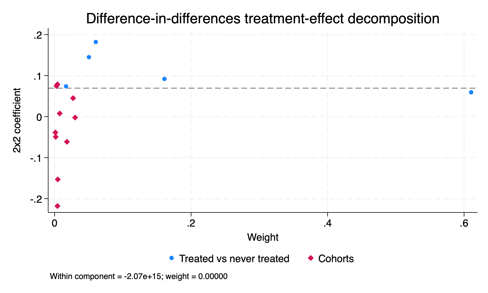
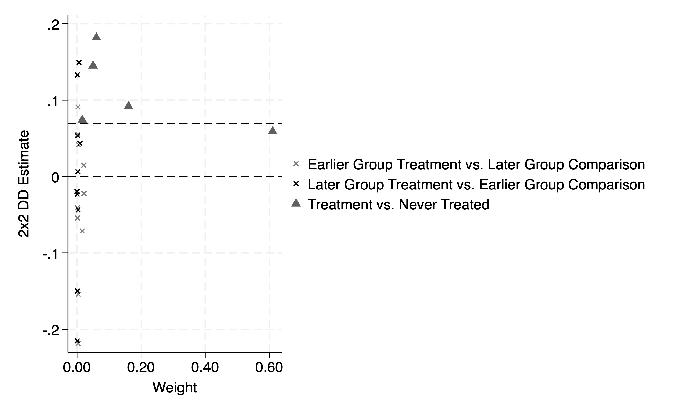

Chapter 2 Goodman-Bacon Decomposition
We will again use the data from Cheng and Hoesktra (2013) to assess the Bacon-Goodman Decomposition of the different \(ATETs\) when there is differential timing. We have a few options to calculate the individual \(ATETs\) and different variance weights. We will focus on estat bdecomp, bacondecomp and ddtimg. Please note that ddtiming has been depreciated.
2.1 estat bdecomp
Our first method to implement the Bacon-Goodman Decomposition is estat bdecomp. We run this command after we use xtdidregress or didregress. Please note that we use the option graph to display the individual \(ATET\) and the corresponding weights.
Treatment and time information
Time variable: year
Control: post = 0
Treatment: post = 1
-----------------------------------
| Control Treatment
-------------+---------------------
Group |
sid | 29 21
-------------+---------------------
Time |
Minimum | 2000 2006
Maximum | 2000 2010
-----------------------------------
Difference-in-differences regression Number of obs = 550
Data type: Longitudinal
(Std. err. adjusted for 50 clusters in sid)
------------------------------------------------------------------------------
| Robust
l_homicide | Coefficient std. err. t P>|t| [95% conf. interval]
-------------+----------------------------------------------------------------
ATET |
post |
(1 vs 0) | .0693984 .0558596 1.24 0.220 -.0428557 .1816526
------------------------------------------------------------------------------
Note: ATET estimate adjusted for panel effects and time effects.
Note: Treatment occurs at different times.
DID treatment-effect decomposition
ATET = .0693984 Number of obs = 550
Number of groups = 50
Number of cohorts = 6
ATET decomposition summary ATET component Weight
------------------------------------------------------------------------------
Treated vs never treated .07843799 0.898809
Treated earlier vs later -.02857716 0.077079
Treated later vs earlier .04563468 0.024112
------------------------------------------------------------------------------
Full ATET decomposition 2x2 coefficient Weight
------------------------------------------------------------------------------
Treated vs never treated
2006 vs never treated .14503261 0.050306
2007 vs never treated .05925429 0.610385
2008 vs never treated .09201016 0.160981
2009 vs never treated .18195417 0.060368
2010 vs never treated .07398961 0.016769
Treated earlier vs later
2006 vs 2007 .04200339 0.004510
2006 vs 2008 .09126019 0.002776
2006 vs 2009 .05519713 0.002082
2006 vs 2010 -.05417012 0.001388
2007 vs 2008 -.0219597 0.021048
2007 vs 2009 .01509344 0.021048
2007 vs 2010 -.07101927 0.015786
2008 vs 2009 -.15384871 0.003701
2008 vs 2010 -.21834129 0.003701
2009 vs 2010 -.04052124 0.001041
Treated later vs earlier
2007 vs 2006 -.04349169 0.003007
2008 vs 2006 .05369758 0.001388
2009 vs 2006 .13322861 0.000694
2010 vs 2006 -.01935504 0.000231
2008 vs 2007 .04379672 0.009020
2009 vs 2007 .14954754 0.006014
2010 vs 2007 .00654799 0.002255
2009 vs 2008 -.14971815 0.000925
2010 vs 2008 -.21479646 0.000463
2010 vs 2009 -.02278972 0.000116
------------------------------------------------------------------------------
Note: Number of cohorts includes never treated.
Note: The ATET reported by xtdidregress is a weighted average of the ATET
components. If any component is substantially different from the ATET
reported by xtdidregress and the weight is large, consider accounting for
treatment-effect heterogeneity by using xthdidregress.
We can check the weights of the individual \(ATET\) to examine the heterogeneity of the estimates. The summary shows the Treated vs Never Treated, Treated Earlier vs Treated Later, and Treated Later vs Treated Earlier \(ATETs\) along with their corresponding weights.
We can see that Treated vs Never Treated has the largest weight of 89.8%, from our graph and our summary table.
We can delve into the early treated vs late treated in the cohort full decomposition. An interesting outcome is that our Treated vs Never Treated \(ATET\) are always positive and range from 0.059 to 0.182.
However, our Early Treated vs Late Treated and Late Treated vs Early Treated have a lot of heterogeneity. 9 are positive, while 11 are negative. It indicated we may need to worry about heterogeneity bias. However, the weights for both cohorts is 10.1% (7.7% for early treated vs late treated and 2.4% for late treated vs early treated).
2.2 bacondecomp
Our second method to implement the Bacon-Goodman Decomposition is bacondecomp
We will first run a TWFE regression with areg and then run Bacondecomp after regression, but it generates stubs. Notice that the areg will have similar outcome as our xtdidregress
areg l_homicide post i.year, absorb(sid) robust
bacondecomp l_homicide post, stub(Bacon_) robust ddetail
drop Bacon_*Linear regression, absorbing indicators Number of obs = 550
Absorbed variable: sid No. of categories = 50
F(11, 489) = 4.73
Prob > F = 0.0000
R-squared = 0.9102
Adj R-squared = 0.8991
Root MSE = 0.1874
------------------------------------------------------------------------------
| Robust
l_homicide | Coefficient std. err. t P>|t| [95% conf. interval]
-------------+----------------------------------------------------------------
post | .0693984 .034312 2.02 0.044 .0019813 .1368155
|
year |
2001 | .0234081 .0481165 0.49 0.627 -.0711326 .1179488
2002 | .002241 .0437824 0.05 0.959 -.0837839 .0882659
2003 | .0476296 .0428512 1.11 0.267 -.0365656 .1318247
2004 | .04259 .0399801 1.07 0.287 -.035964 .1211441
2005 | .0609827 .0413633 1.47 0.141 -.0202889 .1422544
2006 | .0756094 .0401986 1.88 0.061 -.0033739 .1545927
2007 | .0614879 .0467341 1.32 0.189 -.0303365 .1533123
2008 | .0125426 .0479081 0.26 0.794 -.0815885 .1066738
2009 | -.0690221 .0460227 -1.50 0.134 -.1594487 .0214046
2010 | -.1271772 .0460306 -2.76 0.006 -.2176194 -.036735
|
_cons | 1.384578 .0358783 38.59 0.000 1.314084 1.455073
------------------------------------------------------------------------------
Computing decomposition across 6 timing groups
including a never-treated group
------------------------------------------------------------------------------
l_homicide | Coefficient Std. err. z P>|z| [95% conf. interval]
-------------+----------------------------------------------------------------
post | .0693984 .0558596 1.24 0.214 -.0400844 .1788813
------------------------------------------------------------------------------
Bacon Decomposition
+---------------------------------------------------+
| | Beta TotalWeight |
|----------------------+----------------------------|
| Early_v_Late | .0420033932 .0045102348 |
| Late_v_Early | -.0434916914 .0030068233 |
| Early_v_Late | .0912601873 .0027755292 |
| Late_v_Early | .0536975749 .0013877646 |
| Early_v_Late | -.021959696 .0210477626 |
| Late_v_Early | .0437967181 .0090204695 |
| Early_v_Late | .0551971309 .0020816468 |
| Late_v_Early | .1332286149 .0006938823 |
| Early_v_Late | .0150934393 .0210477626 |
| Late_v_Early | .1495475471 .0060136465 |
| Early_v_Late | -.1538487077 .0037007056 |
| Late_v_Early | -.1497181505 .0009251764 |
| Early_v_Late | -.0541701168 .0013877646 |
| Late_v_Early | -.0193550438 .0002312941 |
| Early_v_Late | -.0710192695 .0157858219 |
| Late_v_Early | .0065479889 .0022551174 |
| Early_v_Late | -.218341291 .0037007056 |
| Late_v_Early | -.2147964537 .0004625882 |
| Early_v_Late | -.040521238 .0010408234 |
| Late_v_Early | -.0227897167 .000115647 |
| Never_v_timing | .0784379909 .8988088336 |
+---------------------------------------------------+Notice that the TWFE estimator is the same between areg and xtdidregress. One thing about this command is that we lack details of the individual groups. We only see Early_v_Late and Late_v_Early. I personally prefer the estat bdecomp command.
2.3 ddtiming
Calculating treatment times...
Calculating weights...
Estimating 2x2 diff-in-diff regressions...
Diff-in-diff estimate: 0.069
DD Comparison Weight Avg DD Est
-------------------------------------------------
Earlier T vs. Later C 0.077 -0.029
Later T vs. Earlier C 0.024 0.046
T vs. Never treated 0.899 0.078
-------------------------------------------------
T = Treatment; C = Comparison
We get similar results, but the issue is that ddtiming has been depreciated.